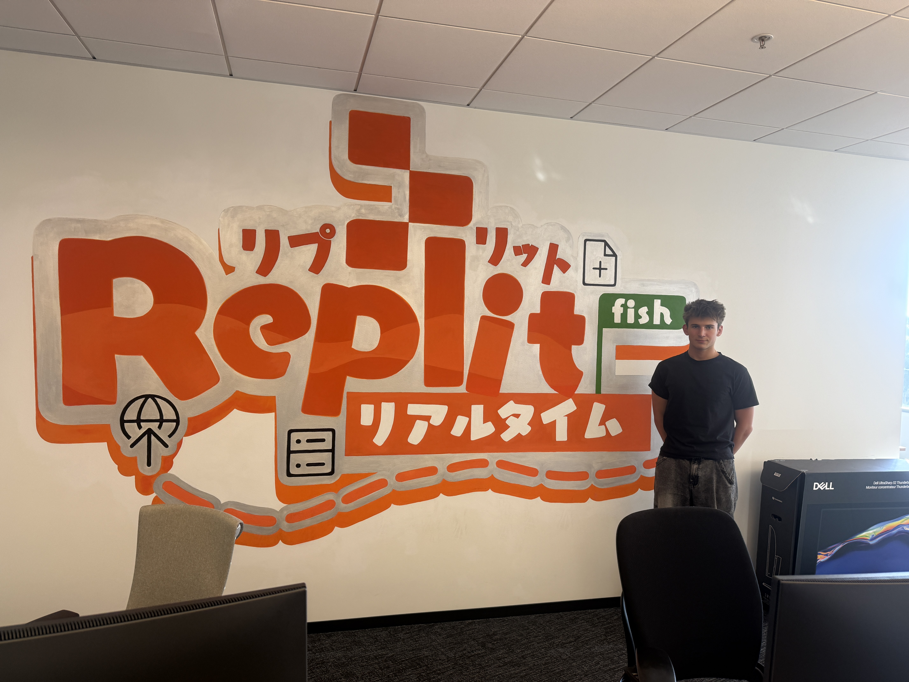
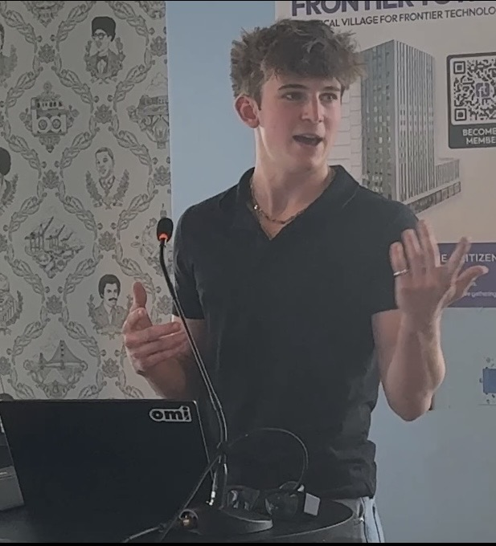
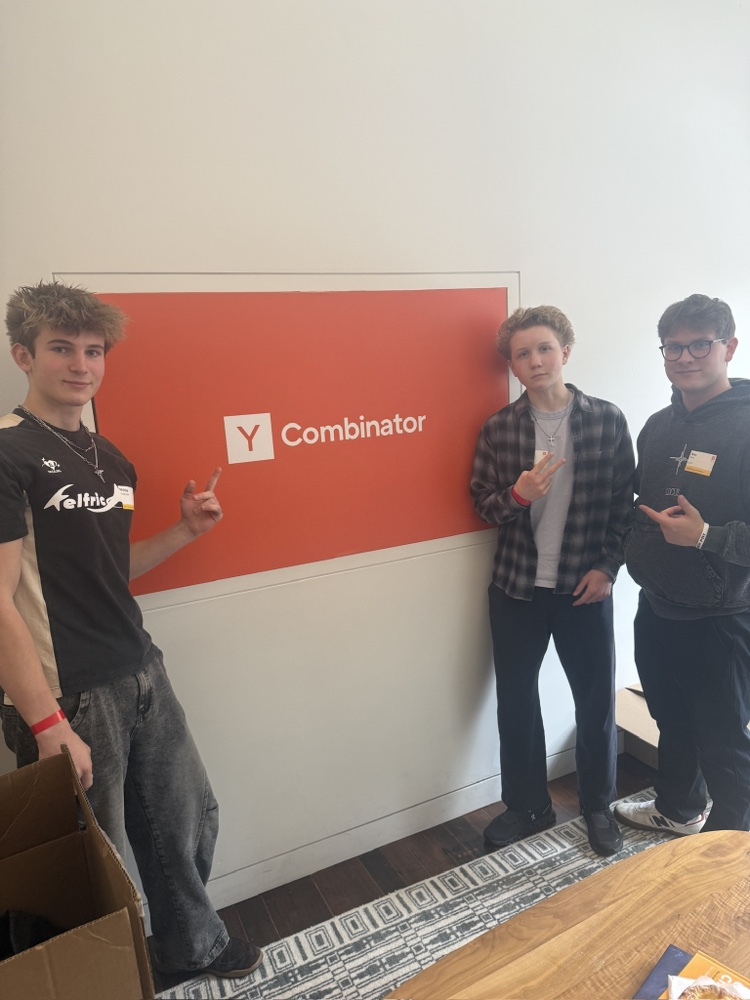
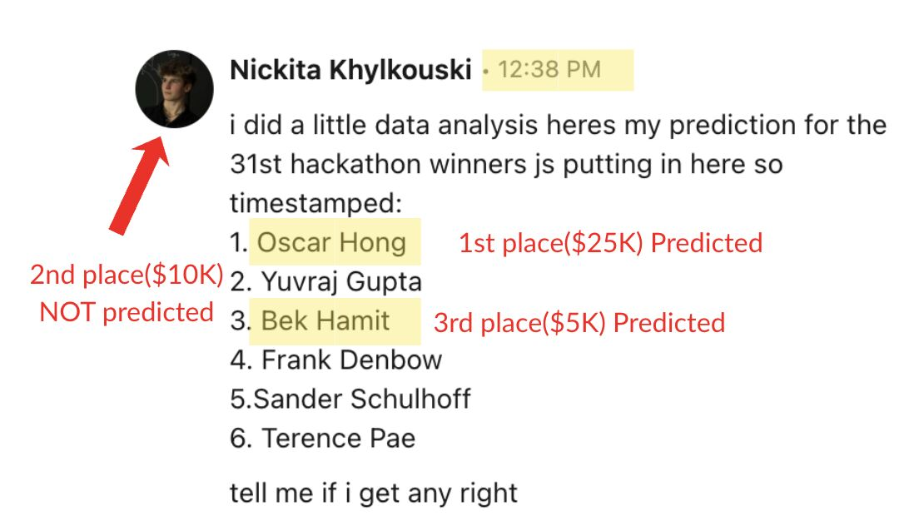
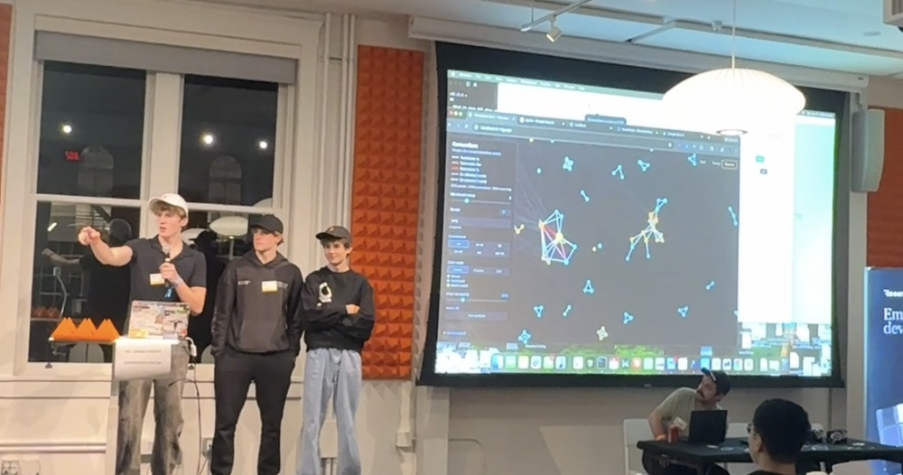
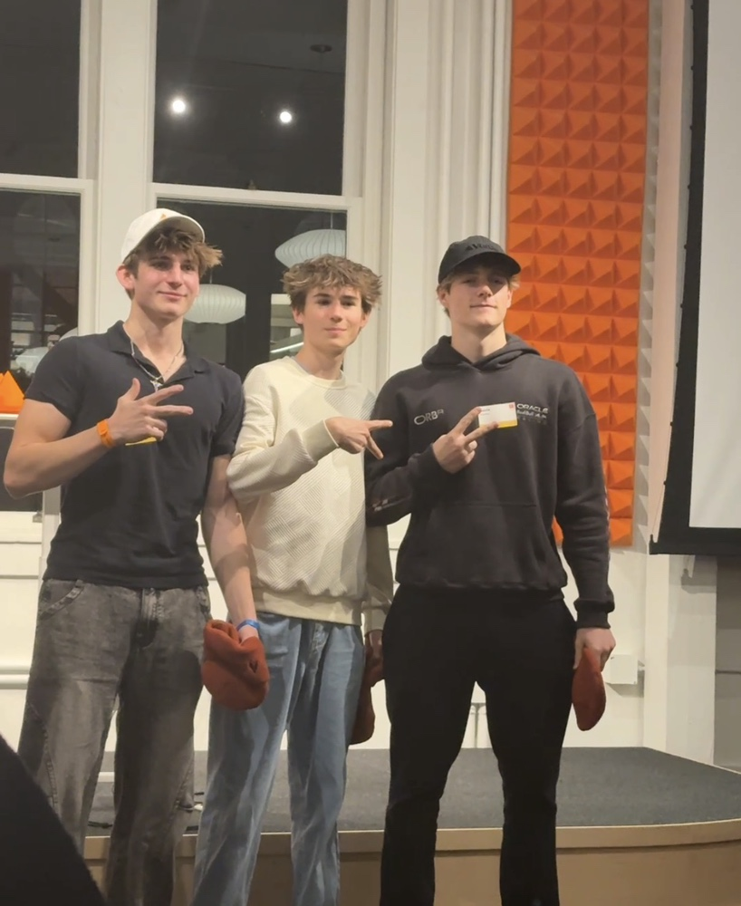
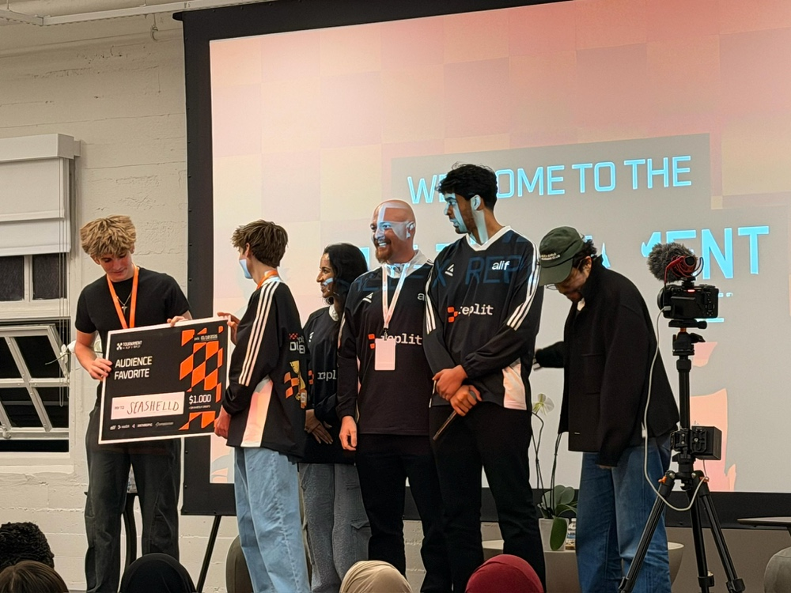
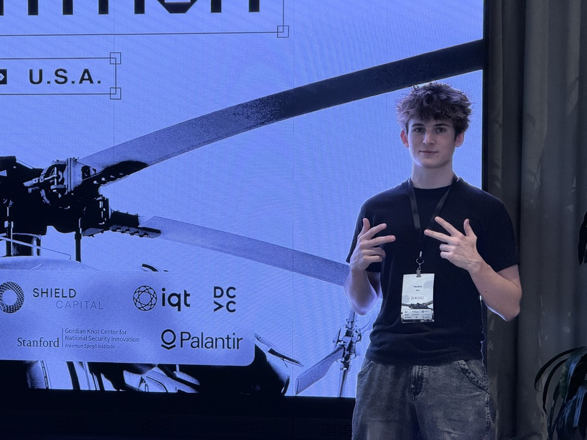
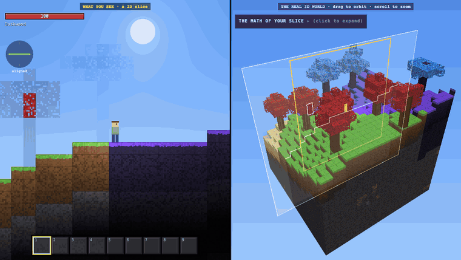

Replit
- Paid security / software engineering intern, June–August 2026; only high schooler on the team.
- Built and led the launch of Black-box Pen Tests; the launch reached ~150K views.










